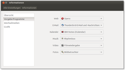

Anpassen
Archivierte Anleitung
Dieser Artikel wurde archiviert, da er - oder Teile daraus - nur noch unter einer älteren Ubuntu-Version nutzbar ist. Diese Anleitung wird vom Wiki-Team weder auf Richtigkeit überprüft noch anderweitig gepflegt. Zusätzlich wurde der Artikel für weitere Änderungen gesperrt.
Zum Verständnis dieses Artikels sind folgende Seiten hilfreich:
Standard-Browser¶
Opera verankert sich bei der Installation ungefragt automatisch als systemweiter Standard-Browser. Während Opera-Fans daran nichts auszusetzen haben dürften, kann dies bei anderen Vorlieben zu unerwünschten Nebeneffekten führen.
Um den Standard-Browser unter GNOME festzulegen, öffnet man im Startmenü
"System -> Einstellungen -> Bevorzugte Anwendungen"
Normalerweise sollte Opera unter "Webbrowser" zur Auswahl stehen. Falls nicht, wählt man "Benutzerdefiniert" und gibt folgenden Befehl ein:
opera %s
Bei Xfce gibt es ebenfalls einen entsprechenden Auswahldialog in den Einstellungen.
Darüber hinaus gibt es die Möglichkeit, den Standard-Browser desktop-unabhängig einzustellen. Um den Standard-Browser zu ändern, dienen die folgenden Befehle [1][2]:
sudo update-alternatives --config x-www-browser
und
sudo update-alternatives --config gnome-www-browser
Anschließend wählt man jeweils den gewünschten Standard-Browser selbst aus. Weitere Details im Artikel Alternativen-System.
Unity¶
Ab Ubuntu 11.04 wird Opera noch nicht direkt nach der Einstellung als Standard-Browser in der Dash von Unity angezeigt. Es wird stattdessen Firefox angezeigt. Um in der Dash nun wirklich Opera angezeigt zu bekommen, gibt man folgendes ins Terminal ein:
sudo ln -s /usr/bin/opera /usr/bin/opera-browser gconftool-2 --type string --set /desktop/gnome/applications/browser/exec /usr/bin/opera-browser
Jetzt sieht man im Dash unter "Im Internet surfen" auch das Opera-Symbol.
Link öffnen¶
Opera öffnet Links (Internetverknüpfungen), die von anderen Anwendungen (E-Mail-Programm, Textverarbeitung...) aus geöffnet werden, normalerweise im aktuellen Fenster. Unter Umständen will man aber die gerade geöffnete Seite auch weiterhin geöffnet haben, wenn man z.B. in Evolution einen Link anklickt. Auch kommt es zu Problemen, wenn man zwei Links nacheinander in einer externen Anwendung anklickt, weil dann beide im gleichen Fenster geöffnet werden, also der zweite den ersten überschreibt. Dies kann man unter GNOME entweder direkt in
"System -> Einstellungen -> Bevorzugte Anwendungen -> Webbrowser"
festlegen. Hier gibt man

"Link in neuem Reiter öffnen" an, um Links immer in einem neuen Reiter zu öffnen oder
"Link in neuem Fenster öffnen", um stattdessen den Link in einem neuem Programmfenster zu öffnen.
Mehr zu den einzelnen Befehlsoptionen für Opera hier 
Standard-E-Mail-Betrachter¶
Die Wahl des Standard E-Mail-Betrachters kann bei GNOME direkt unter
"System -> Einstellungen -> Bevorzugte Anwendungen -> E-Mail Betrachter"
festgelegt werden. Um die E-Mail-Betrachterfunktion mit der Aktion "Neue E-Mail schreiben" zu verknüpfen, trägt man folgenden Befehl ein:
opera -remote "openComposer()"
Möchte man die E-Mail-Betrachterfunktion mit der Aktion "Ungelesene E-Mails öffnen" verknüpfen, wird folgender Befehl benutzt:
opera -remote "openM2()"
Diese Befehle können auch mit Sondertasten verbunden werden. So haben viele Notebooks oder Multimedia-Tastaturen eine extra Taste für E-Mail. Dazu öffnet man
"System -> Einstellungen -> Tastenkombinationen -> E-Mail"
klickt dort in das Feld "Tastenkombination" und drückt die gewünschte Tastaturtaste. Es sollte ein Wert in der Form von "0xec" angezeigt werden. Nach dem Abspeichern startet Opera entweder die Aktion "Neue E-Mail schreiben" oder "Ungelesene E-Mails öffnen".
Dateimanager in Opera auswählen¶
Dazu klickt man unter
"Extras -> Einstellungen -> Erweitert -> Downloads"
auf "Behandlung gespeicherter..." und ändert die Vorgaben für "Dateien (Rückfall)" und "Verzeichnisse". Für beide trägt man z.B.
xdg-open
ein. Nun öffnet Opera Dateien immer mit der jeweiligen Standardanwendung. Alternativ kann man auch einen beliebigen Dateimanager direkt eintragen.
Dateidialog anpassen¶
Ab Opera 9.5 gibt es eine Möglichkeit, den Dateidialog an die Grafikbibliotheken Qt oder GTK anzupassen. Dazu gibt man im Browser in der Adresszeile ein:
opera:config#FileSelector|DialogToolkit
Dort kann man dann einstellen:
0steht für Autodetektion1für den Qt-Dateidialog2für den GTK-Dateidialog
Anschließend speichert man die Einstellung (auf den "Save"-Button drücken) und startet Opera neu.
E-Mail-Programm in Opera auswählen¶
Will man für das Verfassen von E-Mails ein anderes als das in Opera integrierte E-Mail-Programm M2 verwenden, muss man mailto-Links mit der gewünschten Anwendung verknüpfen. Dies erfolgt unter "Extras -> Einstellungen -> Erweitert -> Programme". Dort wählt man das Protokoll "mailto" und ändert die Verknüpfung über "Bearbeiten". Hier ist dann "Mit anderem Programm öffnen" zu aktivieren. In das Textfeld gibt man dann den Befehl für das E-Mail-Programm ein.
evolution
kmail [-s %s] [--body %b] [%t]
/usr/bin/thunderbird
und folgender Parameter:
-compose
apturl¶
apturl ist eine kleine Ergänzung für apt-get, welches die Installation von Paketen über die Adresszeile des Browsers bzw. durch Mausklick erlaubt. Mit einem kleinen manuellen Eingriff kann man apturl auch unter Opera nutzen.
Systemweite Einstellungen¶
Um systemweite Vorgaben für Opera zu setzen, die nicht durch Benutzer verändert werden sollen, benutzt man die Datei /etc/operaprefs_fixed.ini. Das Bearbeiten [3] dieser Datei ist nur mit Root-Rechten möglich. Zeilen mit einem # am Anfang dienen als Kommentare und werden nicht berücksichtigt. Ein Beispiel, dass noch an die eigenen Vorlieben angepasst werden muss:
1 2 3 4 5 6 7 8 9 10 11 12 13 14 15 | [User Prefs] Disable Opera Package AutoUpdate=1 #Home URL=http://www.google.de [Proxy] Enable Proxy=1 Use HTTP=1 HTTP server=SERVER-IP_ODER_NAME:PORT #Use HTTPS=1 #HTTPS server=SERVER-IP_ODER_NAME:PORT #Use FTP=0 #Use GOPHER=0 #Use WAIS=0 #Use Automatic Proxy Configuration=1 #Automatic Proxy Configuration URL=http://SERVER-IP_ODER_NAME/PFAD/proxy.pac |
Weitere Informationen sind der Opera-Dokumentation zu entnehmen.
- Erstellt mit Inyoka
-
 2004 – 2017 ubuntuusers.de • Einige Rechte vorbehalten
2004 – 2017 ubuntuusers.de • Einige Rechte vorbehalten
Lizenz • Kontakt • Datenschutz • Impressum • Serverstatus -
Serverhousing gespendet von